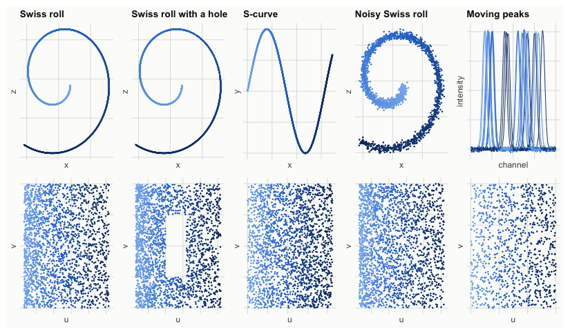
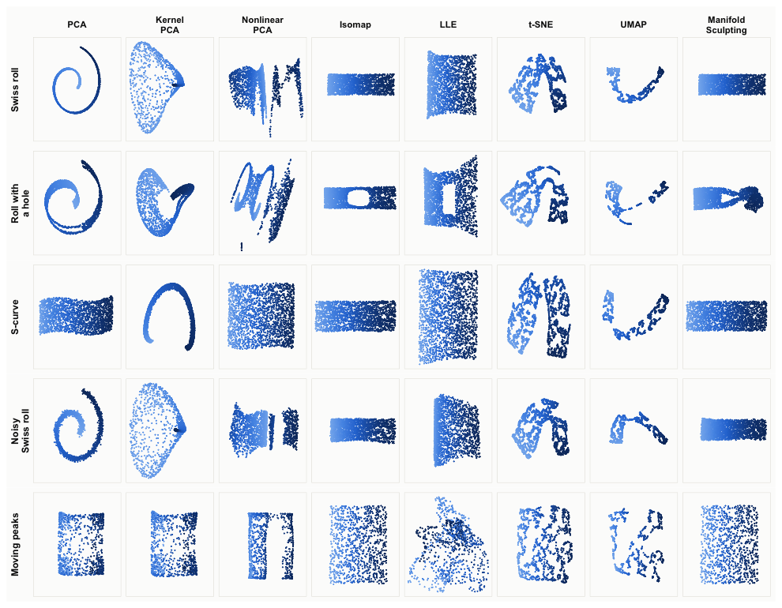
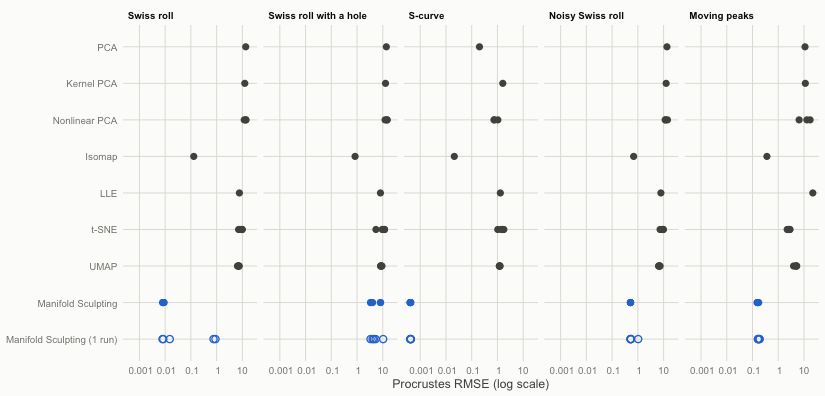
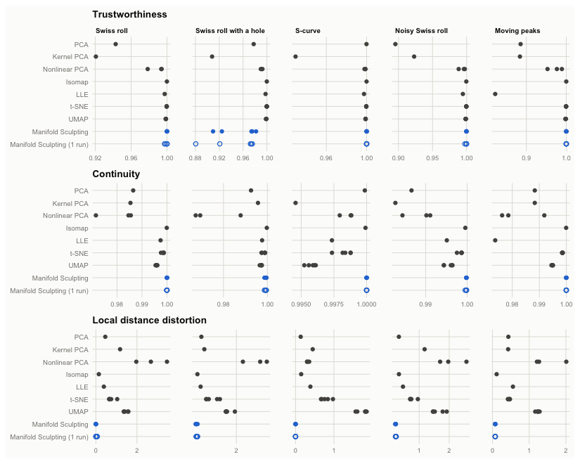
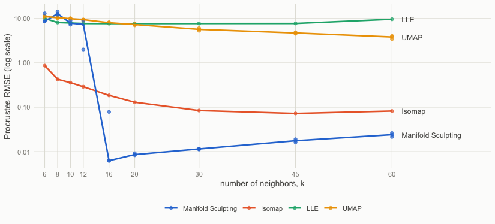
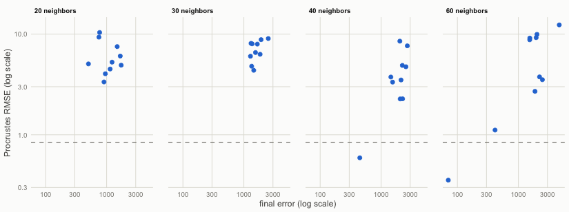
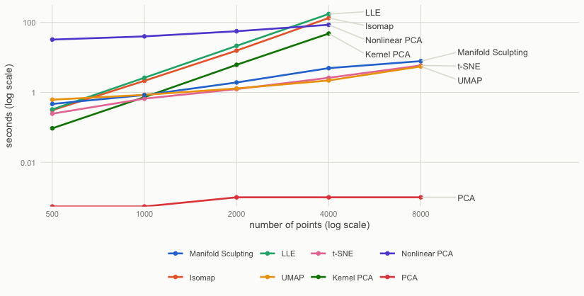

Comparison with other nonlinear dimensionality reduction methods
Source:vignettes/comparison.Rmd
comparison.RmdThis vignette compares Manifold Sculpting with the standard R implementations of six other nonlinear dimensionality reduction methods, and with principal component analysis (PCA) as a linear baseline. The methods are run on five test problems whose intrinsic coordinates are known, so that the quality of each embedding can be measured. The comparison covers the accuracy of the embeddings, the preservation of neighborhoods and local distances, the sensitivity to the number of neighbors, the computing time, and the embedding of new samples.
The results were computed once, with the code shown here, because the comparison takes about an hour and needs packages that manifoldsculpting does not depend on (see Reproducibility).
The methods
| Method | Implementation | Settings | New samples |
|---|---|---|---|
| PCA | stats, prcomp()
|
yes | |
| Kernel PCA (Schölkopf et al., 1998) | kernlab, kpca()
|
Gaussian kernel, width chosen from a grid (best result kept) | yes |
| Nonlinear PCA (Kramer, 1991; Scholz et al., 2005) | pcaMethods, pca(method = "nlpca")
|
default network, 5000 training steps | no |
| Isomap (Tenenbaum et al., 2000) | vegan, isomap()
|
20 neighbors | no |
| LLE (Roweis and Saul, 2000) | Rdimtools, do.lle()
|
20 neighbors, regularization \(10^{-3}\) times the trace of the local Gram matrix | no |
| t-SNE (van der Maaten and Hinton, 2008) | Rtsne, Rtsne()
|
perplexity 30 (Barnes-Hut) | no |
| UMAP (McInnes et al., 2018) | uwot, umap()
|
20 neighbors | yes |
| Manifold Sculpting (Gashler et al., 2008) | manifoldsculpting,
manifold_sculpting()
|
20 neighbors, best of 3 runs
(nstart = 3) |
yes |
The four methods built on a neighborhood graph (Isomap, LLE, UMAP and Manifold Sculpting) use the same number of neighbors, 20; their sensitivity to this choice is studied below. The other settings are the defaults of each implementation, with three exceptions:
- Kernel PCA has no default kernel width that adapts to the scale of the data. The width is chosen, for each problem, from a grid of five values scaled by the median squared distance between samples, and the best result (measured against the true coordinates) is kept. This gives kernel PCA an advantage that the other methods do not get.
- The nonlinear PCA network (an autoassociative neural network, of which pcaMethods trains the decoder part) is trained for 5000 steps instead of its default of twice the number of values in the data, to keep the computing time reasonable; longer training did not improve the results on the Swiss roll. With more than 10 variables, it is trained on the first 10 principal components.
- The regularization of LLE is set to the usual \(10^{-3}\) times the trace of the local Gram matrix (as in scikit-learn). The default of Rdimtools is a fixed value, which depends on the scale of the data.
All the methods run on a single thread. t-SNE, UMAP, nonlinear PCA
and Manifold Sculpting are stochastic: they are run with 5 seeds (3 for
nonlinear PCA, the slowest), and Manifold Sculpting is also run alone
(nstart = 1, labeled “1 run”) to show the reliability of
single runs.
k <- 20 # neighbors for Isomap, LLE, UMAP and Manifold Sculpting
methods <- list(
"PCA" = function(x, ...) {
prcomp(x)$x[, 1:2]
},
"Kernel PCA" = function(x, sigma, ...) {
fit <- kernlab::kpca(x, kernel = "rbfdot", kpar = list(sigma = sigma), features = 2)
kernlab::rotated(fit)
},
"Nonlinear PCA" = function(x, ...) {
if (ncol(x) > 10) x <- prcomp(x, rank. = 10)$x
fit <- pcaMethods::pca(x, method = "nlpca", nPcs = 2, maxSteps = 5000, verbose = FALSE)
pcaMethods::scores(fit)
},
"Isomap" = function(x, k, ...) {
vegan::isomap(dist(x), ndim = 2, k = k)$points
},
"LLE" = function(x, k, ...) {
reg <- 1e-3 * k * mean(FNN::get.knn(x, k)$nn.dist^2)
Rdimtools::do.lle(x, ndim = 2, type = c("knn", k), symmetric = "asymmetric",
regparam = reg)$Y
},
"t-SNE" = function(x, ...) {
Rtsne::Rtsne(x, dims = 2, perplexity = 30, check_duplicates = FALSE, num_threads = 1)$Y
},
"UMAP" = function(x, k, ...) {
uwot::umap(x, n_neighbors = k, n_components = 2, n_threads = 1)
},
"Manifold Sculpting" = function(x, k, ...) {
manifold_sculpting(x, ndim = 2, neighbors = k, nstart = 3)$embedding
},
"Manifold Sculpting (1 run)" = function(x, k, ...) {
manifold_sculpting(x, ndim = 2, neighbors = k, nstart = 1)$embedding
}
)
seeds <- list("t-SNE" = 1:5, "UMAP" = 1:5, "Nonlinear PCA" = 1:3,
"Manifold Sculpting" = 1:5, "Manifold Sculpting (1 run)" = 1:5)
kernel_grid <- c(1, 3, 10, 30, 100) # kernel PCA: sigma = grid / median squared distanceThe test problems
Four problems are the manifolds of the paper of Gashler et
al. (2008), simulated by sim_swiss_roll() and
sim_s_curve():
- Swiss roll: 2000 points on a sheet rolled up in three dimensions.
- Swiss roll with a hole: the same roll with a rectangular region of the sheet left empty, a sampling hole that is known to distort the geodesic distances of Isomap.
- S-curve: 2000 points on a sheet bent into a sine wave.
- Noisy Swiss roll: the Swiss roll with Gaussian noise (standard deviation 0.3, about half the distance between neighbors) added to the coordinates.
The fifth problem is a high-dimensional manifold, the spectroscopic analog of the translated images of the paper:
- Moving peaks: 1000 spectra of 200 channels, each with two Gaussian peaks whose positions vary independently, plus a little noise. The two positions are the intrinsic coordinates. Because the peaks have the same shape, a shift of either peak changes the spectrum by the same amount, so the ideal embedding is a square, but the spectra lie on a strongly curved surface: once the peaks no longer overlap, all the spectra are about equally far apart.
spectra <- function(n, channels = 200, width = 5, noise = 0.01) {
a <- runif(n)
b <- runif(n)
peak <- function(center) exp(-0.5 * (outer(center, seq_len(channels), "-") / width)^2)
x <- peak(30 + 60 * a) + peak(110 + 60 * b) + rnorm(n * channels, sd = noise)
list(x = x, truth = cbind(u = 60 * a, v = 60 * b))
}
set.seed(2026)
roll <- sim_swiss_roll(2000)
holed <- sim_swiss_roll(2400)
holed <- holed[!(holed$u > 20 & holed$u < 32 & abs(holed$v) < 3), ]
curve <- sim_s_curve(2000)
noisy <- sim_swiss_roll(2000, noise = 0.3)
peaks <- spectra(1000)
as_problem <- function(data) {
list(x = as.matrix(data[c("x", "y", "z")]), truth = as.matrix(data[c("u", "v")]))
}
problems <- list(
"Swiss roll" = as_problem(roll),
"Swiss roll with a hole" = as_problem(holed),
"S-curve" = as_problem(curve),
"Noisy Swiss roll" = as_problem(noisy),
"Moving peaks" = peaks
)
sapply(problems, function(p) dim(p$x))
#> Swiss roll Swiss roll with a hole S-curve Noisy Swiss roll Moving peaks
#> [1,] 2000 2137 2000 2000 1000
#> [2,] 3 3 3 3 200
Measures of quality
Four measures are computed for each embedding \(Y\) of data \(X\) with intrinsic coordinates \(T\):
- Procrustes RMSE, the measure of the paper: the root mean squared distance between \(T\) and \(Y\) after the rotation, scaling and translation of \(Y\) that bring it closest to \(T\). It is expressed in the units of the intrinsic coordinates (the Swiss roll is about 49 by 12, the peaks move over 60 channels) and measures how well the global shape of the manifold is recovered.
- Trustworthiness and continuity (Venna and Kaski, 2001), with 10 neighbors. Trustworthiness penalizes points that are neighbors in the embedding but not in the data, according to how far they are in the data; continuity penalizes data neighbors that are separated in the embedding. Both are 1 when the neighborhoods are preserved exactly.
- Local distance distortion: the coefficient of variation of the ratio between the embedded and original distances of the 10 nearest neighbors of each point. It is 0 when the embedding preserves the distances between neighbors up to a common scale (a local isometry), whatever the scale.
# Row-wise ranks of a distance matrix, a point being excluded from its own
# neighbors
rank_rows <- function(d) {
diag(d) <- Inf
t(apply(d, 1, rank, ties.method = "first"))
}
# The similarity transformation (rotation, scaling, translation) of y that
# brings it closest to the true coordinates
procrustes <- function(y, truth) {
my <- colMeans(y)
mt <- colMeans(truth)
yc <- sweep(y, 2, my)
s <- svd(crossprod(yc, sweep(truth, 2, mt)))
rotation <- s$u %*% t(s$v)
b <- sum(s$d) / sum(yc^2)
function(z) sweep(b * sweep(z, 2, my) %*% rotation, 2, mt, "+")
}
rmse <- function(y, truth) sqrt(mean(rowSums((y - truth)^2)))
quality <- function(y, truth, dx, rx, k = 10) {
n <- nrow(y)
dy <- as.matrix(dist(y))
ry <- rank_rows(dy)
near_x <- rx <= k
near_y <- ry <= k
scale <- 2 / (n * k * (2 * n - 3 * k - 1))
ratio <- dy[near_x] / dx[near_x]
c(
rmse = rmse(procrustes(y, truth)(y), truth),
trustworthiness = 1 - scale * sum((rx - k)[near_y & !near_x]),
continuity = 1 - scale * sum((ry - k)[near_x & !near_y]),
distortion = sd(ratio) / mean(ratio)
)
}Results
run <- function(name, problem, seed) {
x <- problem$x
if (name == "Kernel PCA") {
# Keep the kernel width with the best result
sq <- median(dist(x)^2)
fits <- lapply(kernel_grid, function(g) {
time <- system.time(y <- methods[[name]](x, sigma = g / sq))[["elapsed"]]
list(y = y, time = time, sigma = g / sq)
})
errors <- sapply(fits, function(f) rmse(procrustes(f$y, problem$truth)(f$y), problem$truth))
return(fits[[which.min(errors)]])
}
set.seed(seed)
time <- system.time(y <- methods[[name]](x, k = k))[["elapsed"]]
list(y = y, time = time)
}
runs <- list()
results <- list()
for (p in names(problems)) {
problem <- problems[[p]]
dx <- as.matrix(dist(problem$x))
rx <- rank_rows(dx)
for (m in names(methods)) {
for (s in if (is.null(seeds[[m]])) 1 else seeds[[m]]) {
fit <- run(m, problem, s)
runs[[paste(p, m, s, sep = "|")]] <- fit
results[[length(results) + 1]] <- data.frame(
problem = p, method = m, seed = s, time = fit$time,
t(quality(fit$y, problem$truth, dx, rx))
)
}
}
}
results <- do.call(rbind, results)
results$problem <- factor(results$problem, levels = names(problems))
results$method <- factor(results$method, levels = names(methods))The embeddings

Isomap and Manifold Sculpting are the only methods that unroll the Swiss rolls. LLE finds the layout of the sheet but distorts its proportions; t-SNE and UMAP keep neighboring points together, but tear the sheet into pieces and bend them; kernel PCA and nonlinear PCA, like PCA, do not unroll it. On the moving peaks, PCA, kernel PCA and nonlinear PCA pile the spectra up along the edges of the square (the curved surface is seen from the side), while Isomap and Manifold Sculpting spread them evenly over it. On the Swiss roll with a hole, Manifold Sculpting folds one end of the roll over the region of the hole (see below).
Accuracy
| Method | Swiss roll | Swiss roll with a hole | S-curve | Noisy Swiss roll | Moving peaks |
|---|---|---|---|---|---|
| PCA | 13.5 | 13.7 | 0.200 | 13.5 | 11.0 |
| Kernel PCA | 12.4 | 12.8 | 1.61 | 12.5 | 11.3 |
| Nonlinear PCA | 13.0 | 13.9 | 0.844 | 12.5 | 12.2 |
| Isomap | 0.129 | 0.838 | 0.0211 | 0.686 | 0.363 |
| LLE | 7.65 | 8.11 | 1.30 | 7.85 | 22.0 |
| t-SNE | 8.80 | 9.70 | 1.45 | 8.87 | 2.56 |
| UMAP | 7.06 | 8.65 | 1.22 | 6.82 | 4.77 |
| Manifold Sculpting | 0.00847 | 5.43 | 0.000416 | 0.519 | 0.161 |
| Manifold Sculpting (1 run) | 0.337 | 5.50 | 0.000422 | 0.628 | 0.174 |

Manifold Sculpting has the lowest error on four of the five problems. On the Swiss roll and the S-curve, its error is one to two orders of magnitude smaller than that of Isomap, the only other method that comes close (0.0085 against 0.13 on the Swiss roll), and it is about half that of Isomap on the moving peaks (0.16 against 0.36). With noise, the errors of both are limited by the noise itself, whose standard deviation is 0.3. The best of three runs gives consistent results, while two of the five single runs on the Swiss roll left part of the roll folded (the open circles near 1). Manifold Sculpting fails on the Swiss roll with a hole, where Isomap is the most accurate method. t-SNE and UMAP are not designed to preserve the global shape of the data, which this measure rewards; the next measures are more favorable to them.
Neighborhoods and local distances

The methods built on a neighborhood graph preserve the neighborhoods well: trustworthiness and continuity are above 0.99 for Isomap, t-SNE, UMAP and Manifold Sculpting on all the problems, apart from Manifold Sculpting on the Swiss roll with a hole (trustworthiness 0.953), where the fold brings distant parts of the roll together. The local distance distortion separates the methods more clearly. Manifold Sculpting preserves the distances between neighbors almost exactly: their ratios to the original distances vary by 0.13% on the Swiss roll and 7.4% on the moving peaks, against 14% and 11% for Isomap. t-SNE and UMAP, which rescale distances to separate groups of points, distort them by 45% to 170%. On the noisy roll, the noise sets a floor of about 20% for all the methods.
Computing time
| Method | Swiss roll | Swiss roll with a hole | S-curve | Noisy Swiss roll | Moving peaks |
|---|---|---|---|---|---|
| PCA | 0.0 | 0.0 | 0.0 | 0.0 | 0.1 |
| Kernel PCA | 5.9 | 7.3 | 6.0 | 6.1 | 0.8 |
| Nonlinear PCA | 56.4 | 58.7 | 58.2 | 56.1 | 54.7 |
| Isomap | 15.7 | 19.0 | 15.8 | 15.7 | 2.4 |
| LLE | 21.3 | 26.4 | 21.6 | 21.7 | 2.9 |
| t-SNE | 1.2 | 1.4 | 1.2 | 1.2 | 0.6 |
| UMAP | 1.3 | 1.4 | 1.3 | 1.3 | 1.0 |
| Manifold Sculpting | 6.6 | 6.6 | 5.8 | 6.3 | 2.7 |
| Manifold Sculpting (1 run) | 2.2 | 2.2 | 1.9 | 2.2 | 1.0 |
t-SNE, UMAP and a single run of Manifold Sculpting take one to two seconds on 2000 points. Isomap and LLE take 15 to 30 seconds, and nonlinear PCA about a minute; the selection of the kernel width makes kernel PCA five times slower than a single fit.
Number of neighbors
The methods built on a neighborhood graph depend on the number of neighbors \(k\). As in Figure 3 of the paper, the Swiss roll is embedded with \(k\) from 6 to 60 (UMAP and Manifold Sculpting with 3 seeds each).
k_values <- c(6, 8, 10, 12, 16, 20, 30, 45, 60)
problem <- problems[["Swiss roll"]]
sensitivity <- list()
for (m in c("Isomap", "LLE", "UMAP", "Manifold Sculpting")) {
for (kk in k_values) {
for (s in if (m %in% c("UMAP", "Manifold Sculpting")) 1:3 else 1) {
set.seed(s)
y <- tryCatch(methods[[m]](problem$x, k = kk), error = function(e) NULL)
error <- if (is.null(y)) NA else rmse(procrustes(y, problem$truth)(y), problem$truth)
sensitivity[[length(sensitivity) + 1]] <- data.frame(method = m, k = kk, seed = s, rmse = error)
}
}
}
sensitivity <- do.call(rbind, sensitivity)
Manifold Sculpting is the most accurate method from 16 neighbors on, and its error increases slowly with \(k\), as the neighborhoods become less flat. With 12 neighbors or fewer, its runs fold the roll; the paper also notes that Manifold Sculpting has difficulty when the number of neighbors is too small. Isomap degrades more gracefully as \(k\) decreases, while LLE and UMAP do not unroll the roll for any \(k\).
A closer look at the Swiss roll with a hole
The hole leaves two narrow strips of the sheet on either side of it,
and Manifold Sculpting folded the roll near the hole in all its runs
above. To see whether more neighbors help, 10 single runs are made with
20 to 60 neighbors, and the final error of each run
(fit$final_error) is compared with its accuracy.
problem <- problems[["Swiss roll with a hole"]]
hole <- list()
for (kk in c(20, 30, 40, 60)) {
for (s in 1:10) {
set.seed(s)
fit <- manifold_sculpting(problem$x, ndim = 2, neighbors = kk)
y <- fit$embedding
hole[[length(hole) + 1]] <- data.frame(
k = kk, seed = s, final_error = fit$final_error,
rmse = rmse(procrustes(y, problem$truth)(y), problem$truth)
)
}
}
hole <- do.call(rbind, hole)
unfolded <- function(kk) sum(hole$rmse[hole$k == kk] < 1)
For a given number of neighbors, the runs that unfold the roll are
those with the lowest final errors, so that the best of several runs
(nstart) is the right remedy, but only if some runs
succeed. Of the 10 runs, none unfolded the roll (RMSE below 1) with 20
neighbors, none with 30, one with 40 and one with 60. For manifolds with
large holes, Isomap is the more reliable method.
Computing time and sample size
The computing time is measured on Swiss rolls of 500 to 8000 points,
with a single run of each method (Manifold Sculpting with
nstart = 1) and the kernel width selected for the
2000-point roll. Isomap, LLE, kernel PCA and nonlinear PCA are left out
at 8000 points, where they need too much time or memory.
sizes <- c(500, 1000, 2000, 4000, 8000)
best_sigma <- runs[["Swiss roll|Kernel PCA|1"]]$sigma
timing <- list()
for (n in sizes) {
set.seed(n)
x <- as.matrix(sim_swiss_roll(n)[c("x", "y", "z")])
for (m in setdiff(names(methods), "Manifold Sculpting")) {
if (n > 4000 && m %in% c("Isomap", "LLE", "Kernel PCA", "Nonlinear PCA")) next
set.seed(1)
time <- system.time(methods[[m]](x, k = k, sigma = best_sigma))[["elapsed"]]
timing[[length(timing) + 1]] <- data.frame(method = m, n = n, time = time)
}
}
timing <- do.call(rbind, timing)
timing$method[timing$method == "Manifold Sculpting (1 run)"] <- "Manifold Sculpting"
The computing time of Isomap, LLE and kernel PCA grows with the square or the cube of the number of points, as they work on dense matrices of all the pairs of points: at 4000 points, they take 48 to 174 seconds. The time of t-SNE, UMAP and Manifold Sculpting grows almost linearly, and they handle 8000 points in less than 8 seconds. The time of nonlinear PCA is dominated by its 5000 training steps. (PCA takes a few milliseconds, close to the resolution of the timer.)
New samples
Only some of the methods can embed samples that were not used to fit
them: PCA and kernel PCA project them, UMAP places them against its
training embedding (uwot::umap_transform()), and Manifold
Sculpting solves its local problem against its training embedding
(predict()). Each method is fitted on 75% of the Swiss roll
and of the moving peaks, and the other 25% are embedded and compared
with their true coordinates, after the transformation that aligns the
training embedding.
oos_methods <- list(
"PCA" = function(train, test, problem) {
fit <- prcomp(train)
list(train = fit$x[, 1:2], test = predict(fit, test)[, 1:2])
},
"Kernel PCA" = function(train, test, problem) {
sigma <- runs[[paste(problem, "Kernel PCA", 1, sep = "|")]]$sigma
fit <- kernlab::kpca(train, kernel = "rbfdot", kpar = list(sigma = sigma), features = 2)
list(train = kernlab::rotated(fit), test = kernlab::predict(fit, test))
},
"UMAP" = function(train, test, problem) {
fit <- uwot::umap(train, n_neighbors = k, n_components = 2, n_threads = 1, ret_model = TRUE)
list(train = fit$embedding, test = uwot::umap_transform(test, fit, n_threads = 1))
},
"Manifold Sculpting" = function(train, test, problem) {
fit <- manifold_sculpting(train, ndim = 2, neighbors = k, nstart = 3)
list(train = fit$embedding, test = predict(fit, test))
}
)
new_samples <- list()
for (p in c("Swiss roll", "Moving peaks")) {
problem <- problems[[p]]
set.seed(99)
idx <- sample(nrow(problem$x), round(0.75 * nrow(problem$x)))
for (m in names(oos_methods)) {
for (s in if (m %in% c("UMAP", "Manifold Sculpting")) 1:3 else 1) {
set.seed(s)
fit <- oos_methods[[m]](problem$x[idx, ], problem$x[-idx, ], p)
map <- procrustes(fit$train, problem$truth[idx, ])
new_samples[[length(new_samples) + 1]] <- data.frame(
problem = p, method = m, seed = s,
train = rmse(map(fit$train), problem$truth[idx, ]),
test = rmse(map(fit$test), problem$truth[-idx, ])
)
}
}
}
new_samples <- do.call(rbind, new_samples)| Method | Swiss roll, training | Swiss roll, new samples | Moving peaks, training | Moving peaks, new samples |
|---|---|---|---|---|
| PCA | 13.486 | 13.464 | 10.599 | 10.399 |
| Kernel PCA | 12.454 | 12.693 | 10.895 | 10.632 |
| UMAP | 6.578 | 6.349 | 4.622 | 4.908 |
| Manifold Sculpting | 0.010 | 0.010 | 0.197 | 0.181 |
Manifold Sculpting embeds new samples as accurately as its training samples, on both problems. UMAP places new samples consistently with its training embedding, but this embedding is itself far from the intrinsic coordinates; PCA and kernel PCA project new samples consistently, but do not unroll the manifolds.
Summary
- Accuracy. Manifold Sculpting recovered the intrinsic coordinates most accurately on four of the five problems, by one to two orders of magnitude on the Swiss roll and the S-curve, and it preserved the distances between neighbors almost exactly. Isomap was the only other method to unroll the manifolds, and it is the more robust of the two: it degrades gracefully with fewer neighbors and handled the sampling hole that Manifold Sculpting could not.
-
Reliability. Manifold Sculpting is a local
optimization. It needs enough neighbors (16 or more on the Swiss roll)
and several runs (
nstart); the final errors of the runs (fit$final_error) show when runs ended folded. - Neighborhoods. t-SNE and UMAP preserve neighborhoods as well as the best methods and are fast, but they distort distances and the global shape: they show groups of points rather than coordinates on the manifold.
- LLE, kernel PCA and nonlinear PCA did not unroll the curved manifolds with the standard implementations and settings used here.
- Speed. Manifold Sculpting scales almost linearly with the number of points, like t-SNE and UMAP, while Isomap, LLE and kernel PCA become slow beyond a few thousand points.
-
New samples. Manifold Sculpting (with
predict()), UMAP, PCA and kernel PCA can embed new samples, and Manifold Sculpting embedded them as accurately as its training samples.
Reproducibility
The comparison was computed with the following versions:
| Package | Version |
|---|---|
| manifoldsculpting | 1.2.1 |
| kernlab | 0.9.33 |
| pcaMethods | 2.4.0 |
| vegan | 2.7.6 |
| Rdimtools | 1.1.4 |
| Rtsne | 0.17 |
| uwot | 0.2.5 |
R version 4.6.1 (2026-06-24) on macOS Tahoe 26.7.1 with libRblas.0.dylib To compute it again, install these packages (pcaMethods is on
Bioconductor) together with FNN, ggplot2 and patchwork, and run
vignettes/precompute.R from the source of the package. It
knits vignettes/comparison.Rmd.orig, which holds the code,
into vignettes/comparison.Rmd.
References
Gashler, M., Ventura, D. and Martinez, T. (2008). Iterative non-linear dimensionality reduction with manifold sculpting. In Advances in Neural Information Processing Systems 20, 513–520.
Kramer, M. A. (1991). Nonlinear principal component analysis using autoassociative neural networks. AIChE Journal, 37, 233–243.
McInnes, L., Healy, J. and Melville, J. (2018). UMAP: Uniform manifold approximation and projection for dimension reduction. arXiv, 1802.03426.
Roweis, S. T. and Saul, L. K. (2000). Nonlinear dimensionality reduction by locally linear embedding. Science, 290, 2323–2326.
Schölkopf, B., Smola, A. and Müller, K.-R. (1998). Nonlinear component analysis as a kernel eigenvalue problem. Neural Computation, 10, 1299–1319.
Scholz, M., Kaplan, F., Guy, C. L., Kopka, J. and Selbig, J. (2005). Non-linear PCA: a missing data approach. Bioinformatics, 21, 3887–3895.
Tenenbaum, J. B., de Silva, V. and Langford, J. C. (2000). A global geometric framework for nonlinear dimensionality reduction. Science, 290, 2319–2323.
van der Maaten, L. (2014). Accelerating t-SNE using tree-based algorithms. Journal of Machine Learning Research, 15, 3221–3245.
van der Maaten, L. and Hinton, G. (2008). Visualizing data using t-SNE. Journal of Machine Learning Research, 9, 2579–2605.
Venna, J. and Kaski, S. (2001). Neighborhood preservation in nonlinear projection methods: an experimental study. In Artificial Neural Networks — ICANN 2001, 485–491.